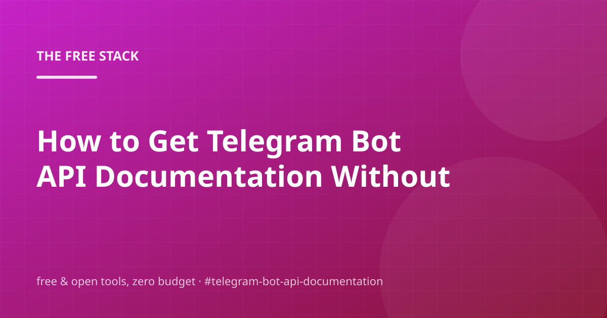

How to Get Telegram Bot API Documentation Without Spending a Dollar

Most 'complete guides' to telegram bot api documentation pad the word count with ads. This one is different: every recommendation below runs on a free tier, an open-source project, or both. If a recommendation ever costs money, we say so in plain words.
We'll walk through Telegram Bot API, Bluesky At Protocol, Mastodon API, and Measure before you optimize — and finish with the questions people actually ask, so you can check before you buy anything. You shouldn't have to buy anything.
Telegram Bot API
Worth spending ten minutes on: The Telegram Bot API is free, HTTP-based and needs nothing but a token from @BotFather.
The upshot: Create a bot in one message, then send and receive messages, create channels, and drive webhooks entirely over plain HTTPS. It is the cheapest 'social media' channel a self-publishing site can own, and this blog posts to it when a token is configured.
Keep it this simple and you'll be ahead of most tutorials out there.
- Message @BotFather and /newbot to get a token
- Send messages with POST /bot<token>/sendMessage
- Optionally set a webhook with setWebhook for incoming events
Bluesky At Protocol
Worth spending ten minutes on: Bluesky runs on the open AT Protocol, whose public API is free — an account plus an app password is all a bot needs to post.
Concretely: createSession returns an access token, and app.bsky.feed.post publishes a post. No middleman, no paid 'basic tier' for your own account's posting, and the protocol is openly specified so the implementation is boring in the best way.
The links in the sources section go straight to the primary docs.
Mastodon API
Start with the basics. Mastodon's API is free and fully documented — any instance lets you register an app and post programmatically.
Which, in day-to-day terms, means: Create an app in your instance's developer settings, exchange it for a token, and the REST API handles statuses, follows and search. Because the whole platform is open source and federated, posting to it costs nothing and can point at an instance you run yourself.
If you only do one thing today, make it this one.
Measure before you optimize
Worth spending ten minutes on: You cannot improve what you do not measure, and the measurement tools here are all free.
Which, in day-to-day terms, means: Search console data, a simple counter in your build log, or raw access logs tell you which pages earn their keep. Ten minutes of reading that data is worth more than an hour of guessing, and none of it requires a paid analytics account.
If you only do one thing today, make it this one.
Frequently asked questions
Can I keep this free forever, or is it a trial?
The honest answer: Bluesky runs on the open AT Protocol, whose public API is free — an account plus an app password is all a bot needs to post. Keyless public endpoints can get throttled if you hammer them, so batch your requests and cache what you fetch.
How much do I need to know before trying telegram bot api documentation?
The honest answer: Bluesky runs on the open AT Protocol, whose public API is free — an account plus an app password is all a bot needs to post. Free tiers are generous for personal projects, but a growing business should read the pricing page before scaling into it.
Is telegram bot api documentation actually free?
The honest answer: The Telegram Bot API is free, HTTP-based and needs nothing but a token from @BotFather. Free tiers are generous for personal projects, but a growing business should read the pricing page before scaling into it.